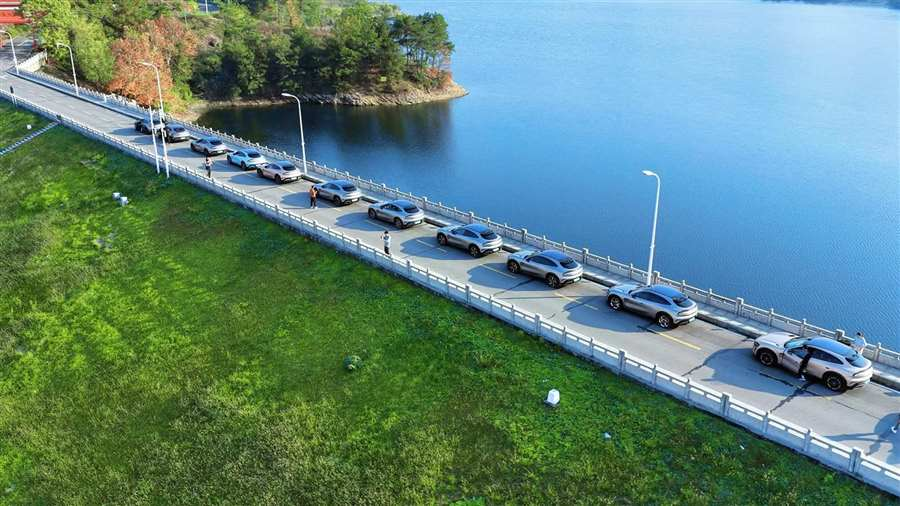
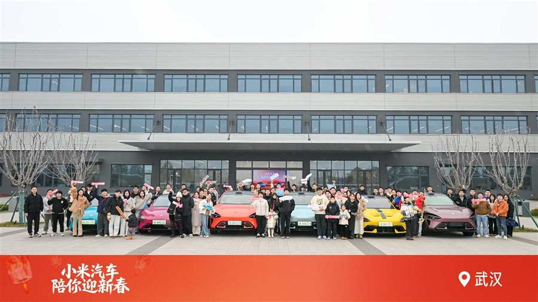
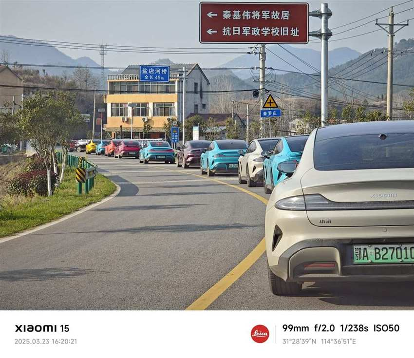
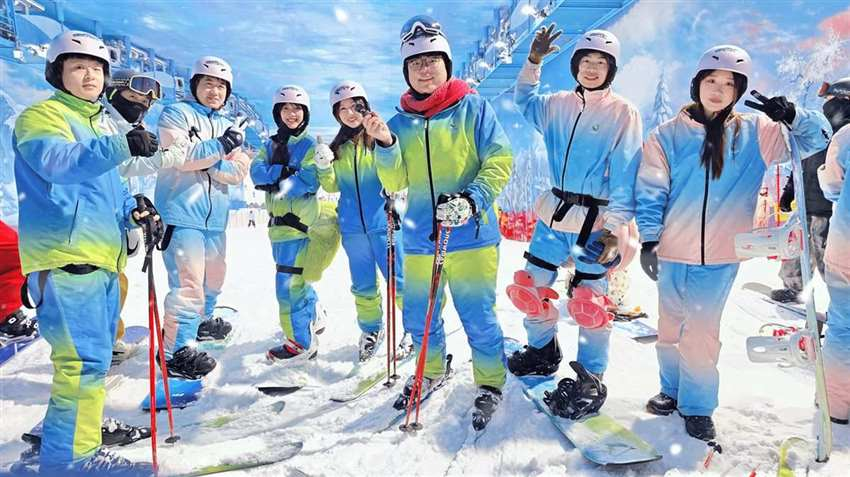
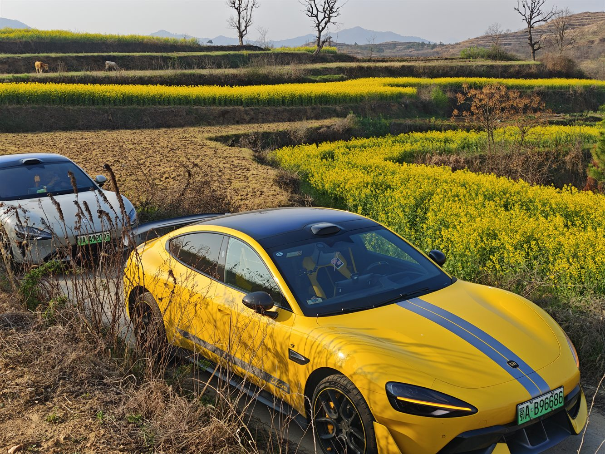
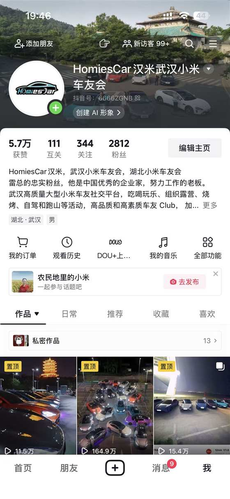
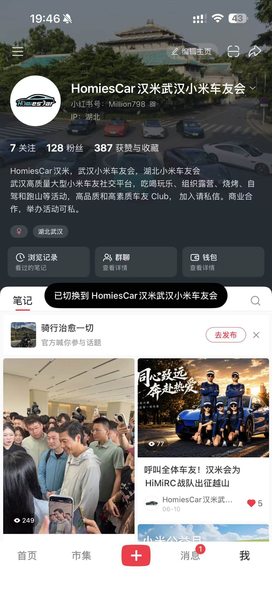

二七长江大桥首秀
梦开始的地方，汉米会车队第一次被城市看见。
About HomiesCar
汉米会不是只在群里聊天的车友会。我们持续把线上热爱带到真实世界：夜色里的车队、湖边的帐篷、山路上的队形、雪场里的合照、年会上的掌声。
从二七长江大桥首秀，到武大拍摄、梁子湖彩虹跑道、汉米跨年嘉年华、湖畔露营、冬日跑山和滑雪季，HomiesCar 汉米一直在把武汉小米车友聚到一起。


Selected Events
梦开始的地方，汉米会车队第一次被城市看见。
把年度相聚做成仪式，车友、伙伴和品牌一起到场。
湖边、星空、车队和朋友，是汉米会最松弛的打开方式。
在山路上保持队形，也保持热爱。
从方向盘到雪杖，社群的快乐半径继续扩大。



Activity Recap
从二七长江大桥首秀到冬季滑雪季，汉米会的活动不是零散聚会，而是一条持续更新的社群轨迹。这里按年份和活动类型整理，方便车友、合作方和新朋友快速了解汉米会做过什么。
梦开始的地方，车队第一次以城市地标为背景被看见。
从校园拍摄到露营相聚，早期汉米会把镜头和生活放在一起。
用车队、道路和色彩打开汉米会的视觉记忆。
车友关系从方向盘延伸到游戏局，社群开始拥有更多玩法。
围绕小米品牌的重要节点，车友会共同关注并参与讨论。
把线上发布会变成武汉车友的线下观礼现场。
车友会与品牌内容、圈层交流进一步靠近。
把车友会拍摄做成轻松、有梗、有传播感的内容现场。
武汉地标与小米车队同框，形成汉米会的城市名片。
新朋友、新车主、新关系，在派对里完成第一次连接。
把夜路、帐篷和日出变成车友之间共同经历的清晨。
车友会从活动组织延伸到车主生活服务。
多场景活动协同，让汉米会的组织能力继续被验证。
年度级相聚，车友、伙伴和品牌一起把汉米会做成舞台。
以内容创作延续车友会的新年开场。
小年前夜的车队相聚，把节日感带进车友会。
春天的山路、队形和速度，是汉米会最鲜明的驾驶记忆。
湖边、星空、车队和朋友，构成汉米会一周年的重要节点。
车友会参与城市服务，把车队力量用在更温暖的地方。
从驾驶到运动，汉米会不断扩展车友共同体验的边界。
以观影为纽带，把车友连接进更大的城市联动。
车队再次驶向山顶，把云海和日出写进活动回忆。
以科技、露营和车友体验为核心，连接品牌活动与本地社群。
冬日山路里的队形和热爱，成为汉米会驾驶活动代表作。
车友会与品牌餐饮体验结合，扩展社交和合作场景。
车尾箱变成小型市集，车友分享各自生活方式。
从方向盘到雪场，社群的快乐半径继续扩大。
Club Scenes
武汉地标、夜间车阵、航拍队形，让小米车友的存在感变成城市画面。
露营、烧烤、湖边聚会，把车从交通工具变成生活方式的入口。
跑山、攀岩、滑雪、电竞，让车友在不同场景里继续认识彼此。
婚车、后备箱集市、品牌品鉴与活动共创，为高质量车友社群打开更多可能。
Media Matrix
抖音号：6666ZGNB
小红书号：Million798
持续沉淀官方社区内容与车友互动。

